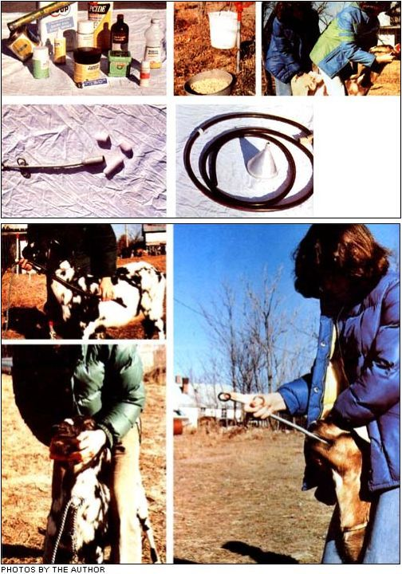

TOP: Topical medicines . . . the easiest and best way to administer oral medications is in food or water . . . drenching. MIDDLE LEFT: A bolus gun and horse-sized boluses. MIDDLE RIGHT: A flexible stomach tube marked with tape (see text), a homemade gag, and funnel. ABOVE; LEFT: Measuring the distance from mouth to stomach . . . and placing the mouth gag (a job that takes either brute strength or considerable patience when working with goats). ABOVE, RIGHT: Using the bolus gun.